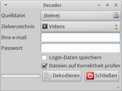

OnlineTvRecorder
Dieser Artikel wurde für die folgenden Ubuntu-Versionen getestet:
Ubuntu 16.04 Xenial Xerus
Ubuntu 14.04 Trusty Tahr
Zum Verständnis dieses Artikels sind folgende Seiten hilfreich:
OnlineTvRecorder.com  (kurz OTR) ist ein browserbasierter Dienst, der seinen Nutzern einen digitalen Videorecorder zur Verfügung stellt. Es stehen Sender aus dem deutschsprachigen, amerikanischen, englischen, französischen, russischen und polnischen Raum zur Verfügung. Zur Verwendung ist eine kostenlose Registrierung erforderlich. Es gibt unterschiedliche Benutzerstatus , die sich auf die vorhandenen Nutzungsmöglichkeiten auswirken. Die heruntergeladenen Dateien im .otrkey-Format müssen durch einen Dekoder noch entschlüsselt werden.
(kurz OTR) ist ein browserbasierter Dienst, der seinen Nutzern einen digitalen Videorecorder zur Verfügung stellt. Es stehen Sender aus dem deutschsprachigen, amerikanischen, englischen, französischen, russischen und polnischen Raum zur Verfügung. Zur Verwendung ist eine kostenlose Registrierung erforderlich. Es gibt unterschiedliche Benutzerstatus , die sich auf die vorhandenen Nutzungsmöglichkeiten auswirken. Die heruntergeladenen Dateien im .otrkey-Format müssen durch einen Dekoder noch entschlüsselt werden.
Eine Anwendung zur Verwendung ist unter OTR-Verwaltung zu finden.
Folgende Formate stehen – je nach Status – zur Verfügung:
MPEG-4-Codec
AVI-Datei ohne DRM
H.264 (SD / HD)
MP4
Online-Stream
Installation¶
Unter OnlineTvRecorder.com  werden zwei verschiedene Entschlüsselungsanwendungen angeboten. Der Standard-Dekoder und der Easydecoder. Mittels Wine kann auch die ebenfalls angebotene Version des Easydecoders für Windows verwendet werden.
werden zwei verschiedene Entschlüsselungsanwendungen angeboten. Der Standard-Dekoder und der Easydecoder. Mittels Wine kann auch die ebenfalls angebotene Version des Easydecoders für Windows verwendet werden.
(Standard-)Dekoder¶
Der Standard-Dekoder entschlüsselt heruntergeladene (und zuvor aufgenommene) Videodateien. Er unterstützt auch problemlos 64-Bit Ubuntu (getestet unter Xubuntu 16.04). Die statisch gelinkte Software für "Linux" herunterladen und entpacken [1], z.B. nach ~/otrdecoder im Homeverzeichnis. Nun den Ordner ~/bin anlegen und aus dem Ordner, in dem sich das Programm befindet, das Installationsskript install-otrdecoder.sh aufrufen [2]. Zusätzlich müssen folgende Pakete installiert sein bzw. werden (z.B. bei Xubuntu):
python python-gtk2 python-glade2
 mit apturl
mit apturl
Paketliste zum Kopieren:
sudo apt-get install python python-gtk2 python-glade2
sudo aptitude install python python-gtk2 python-glade2
Über otrdecoder-gui bzw. otrdecoder kann das Programm verwendet [3] werden. Auf Wunsch einen Menüeintrag [4] vornehmen.
Easydecoder¶
Easydecoder kann sowohl einzelne Dateien als auch ganze Ordner entschlüsseln. Zudem kann er Sendungen auch werbefrei herunterladen, sofern man ein Premium-Konto besitzt. Beim Download kann man zwischen Konsolenversion, GUI-Version als Archiv und als Debian-Paket entscheiden. Außer beim Debian-Paket geht man bei allen Downloads wie unter (Standard-)Dekoder beschrieben vor.
Hat man Easydecoder per Debian-Paket installiert, so kann man die Anwendung mit dem Befehl qotr starten.
Ubuntu (getestet mit 16.04) in 32-Bit muss folgendermaßen mit Abhängigkeiten installiert werden:
sudo dpkg -i PAKET sudo apt-get -f install sudo dpkg -i PAKET
Für PAKET ist die Datei vom Download einzusetzen.
Unter der 64-Bit Variante von Ubuntu kann das 32-Bit Debian-Paket folgendermaßen installiert werden:
sudo dpkg --add-architecture i386 sudo apt-get update sudo apt-get install libc6:i386 libgcc1:i386 libqt4-network:i386 libqtcore4:i386 libqtgui4:i386 libstdc++6:i386 zlib1g:i386 sudo dpkg -i PAKET
Für PAKET ist die Datei vom Download einzusetzen.
Alternativ kann man dazu gdebi wie in --force-architecture beschrieben verwenden.

Dekodierung¶
GUI¶
Nach dem Start der grafischen Oberfläche hinterlegt man die Benutzerdaten und wählt die Eingabedatei sowie das Zielverzeichnis aus. Anschließend leitet man über "Dekodieren" die Umwandlung ein.
Hinweis:
Für die Verwendung des Dekoders ist eine bestehende Internetverbindung erforderlich. Nur programmierte Aufnahmen können dekodiert werden.
Terminal¶
Alternativ kann man für die Dekodierung auf das Terminal ausweichen. Im Gegensatz zur GUI können Skripte zur Verarbeitung mehrerer Dateien verwendet werden.
Der Aufruf über das Terminal [2] sieht wie folgt aus:
otrdecoder -i foo -e meine@emailadresse.de -p Geh3im
Zusätzliche Parameter können übergeben werden:
| Terminal | |
| Parameter | Beschreibung |
-i foo | Zu verwendende Datei wählen - hier foo. |
-e meine@emailadress.de | Die zur Registrierung auf OTR verwendete Emailadresse hier angeben. |
-p Geh3im | Das Passwort, welches man bei OTR verwendet hier hinterlegen - im Beispiel: Geh3im |
-o Ausgabeordner | Ausgabeordner definieren - in der Grundeinstellung wird das Aufrufverzeichnis verwendet. |
-h | Hilfe - listet weitere Parameter auf. |
Skripte¶
otrkey-Dateien¶
Zur Dekodierung mehrerer Dateien bietet sich das folgende Skript [5] an:
1 2 3 4 5 6 7 8 9 10 11 12 | #!/bin/sh # otrmultidecoder by Fmeyer01 # Usage: otrmd files stat=1 # DEFAULT EXIT STATUS; RESET TO 0 BEFORE NORMAL EXIT email=deine@email-adresse.de pass=passwort for arg do /pfad/zu/deinem/otrdecoder -i "$arg" -e "$email" -p "$pass" done stat=0 |
Das Skript unter otrmultidecoder.sh speichern und Ausführrechte [6] setzen. Über
./otrmd *.otrkey
kann das Skript aufgerufen [2] werden.
- Erstellt mit Inyoka
-
 2004 – 2017 ubuntuusers.de • Einige Rechte vorbehalten
2004 – 2017 ubuntuusers.de • Einige Rechte vorbehalten
Lizenz • Kontakt • Datenschutz • Impressum • Serverstatus -
Serverhousing gespendet von